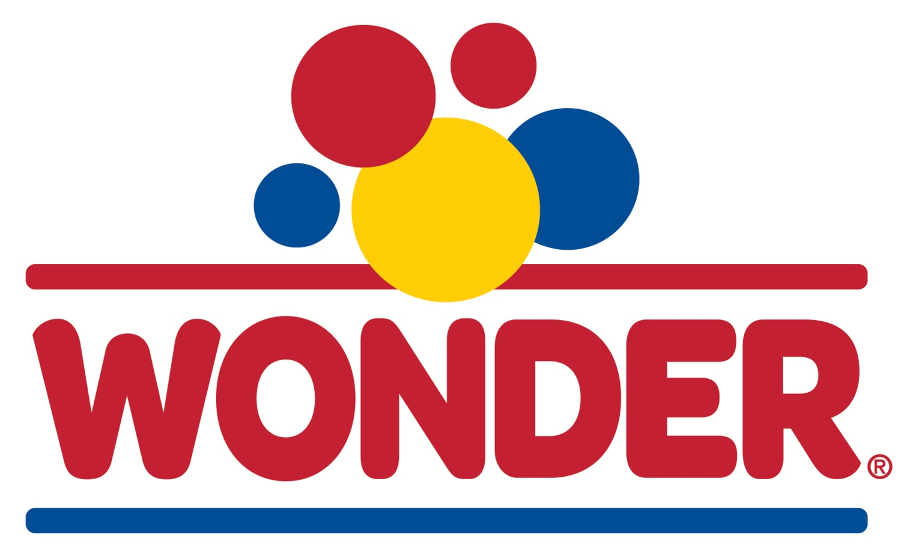

Written by: Aiden Smith
Contents
Wonder Bread was created by The Taggart Baking Company of Indianapolis, Indiana. On May 21, 1921, they began the production of Wonder Bread as we know it today. The name was inspired by a feeling of "wonder" the vice president Elmer Cline felt
when he attended a balloon race. He was inspired by all the balloons of varying colors up in the sky, this is also where the iconic logo came from. Then, in the 1930s the bakign company began to advertise Wonder Bread in it's sliced form
nationwide. This was revolutionary at the time as it was one of the first bread companies to do this.
(Find more info on the Wonder Bread site: Wonder Bread Site)
Wonder Bread was hitting it off, it was during the World War II period though due to steel shortage there was a suspension on slicers, banning bread-slicers until 1945. Another claim Wonder Bread has is it was the the first narional bread company to have dating and nutrition facts on it's packaging. Additionally, in 2006 Wonder was one of the first brands to include whole grain with it's traditional white bread.